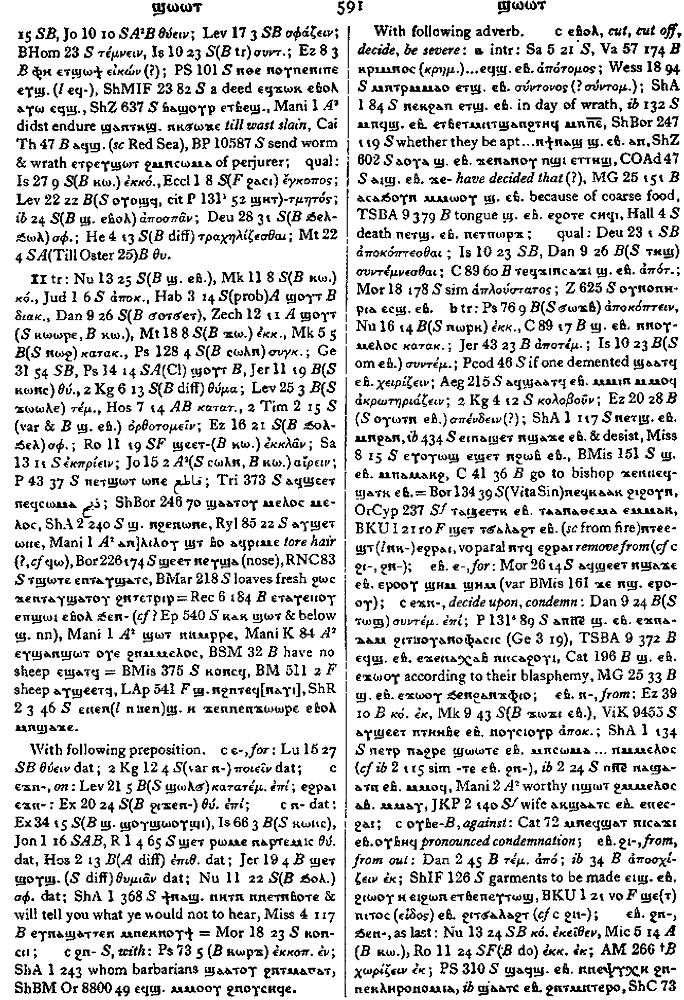
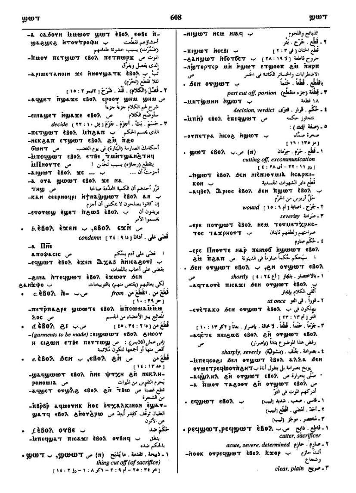

(verb)
cut, slay
― intr: [κοπτειν, θυειν, σφαζειν, τεμνειν]
― qual: [εγκοποσ]
― tr: [κοπτειν]
― p.c. S,B,F, he who, that which cuts, is cut
| intr: be cut short, want, lack [υστερειν, ελαττονειν]
― intr: [κοπτειν, θυειν, σφαζειν, τεμνειν]
― qual: [εγκοποσ]
― tr: [κοπτειν]
― p.c. S,B,F, he who, that which cuts, is cut
| intr: be cut short, want, lack [υστερειν, ελαττονειν]
(S, sA, F)
ϣⲱⲱⲧ
(S, sA, B) ϣⲱⲧ
(S) ϣⲱ(ⲱ)ⲧⲉ
(B) ϣⲱϯ
(A) ϣⲟⲩⲟⲩⲧ, ϣⲟⲩⲧ
(S, sA, B, F) ϣ(ⲉ)ⲧ-
(S, F) ϣⲉⲉⲧ-
(B) ϣⲁⲧ-
(sA) ϣⲱⲧ-
(S, sA) ϣⲁⲁⲧ=
(S, A, B) ϣⲁⲧ=
(F) ϣⲉⲉⲧ=
(S, A) ϣⲁⲁⲧ+
(S, B) ϣⲁⲧ+
(S) ϣⲏⲧ+
(S, B, F) p c ϣⲁⲧ-
(B) p c ϣⲟⲧ-
(S, sA, B) ϣⲱⲧ
(S) ϣⲱ(ⲱ)ⲧⲉ
(B) ϣⲱϯ
(A) ϣⲟⲩⲟⲩⲧ, ϣⲟⲩⲧ
(S, sA, B, F) ϣ(ⲉ)ⲧ-
(S, F) ϣⲉⲉⲧ-
(B) ϣⲁⲧ-
(sA) ϣⲱⲧ-
(S, sA) ϣⲁⲁⲧ=
(S, A, B) ϣⲁⲧ=
(F) ϣⲉⲉⲧ=
(S, A) ϣⲁⲁⲧ+
(S, B) ϣⲁⲧ+
(S) ϣⲏⲧ+
(S, B, F) p c ϣⲁⲧ-
(B) p c ϣⲟⲧ-
| cut, slay3100 | Crum: 590b | ||||||||
| With following preposition:7428 | Crum: 591a | ||||||||
| c ⲉ- | for7429 | ||||||||
| c ⲉϫⲛ- | on7430 | ||||||||
| c ⲛ- {dat} | 7431 | ||||||||
| (S) c ϩⲛ- | with7432 | ||||||||
| With following adverb:7433 | Crum: 591b | ||||||||
| c ⲉⲃⲟⲗ | cut, cut off, decide, be
severe
― intr: ― qual: ― tr: [αποκοπτειν]7434 |
||||||||
| c {ⲉⲃⲟⲗ} ⲉ- | for7435 | ||||||||
| c {ⲉⲃⲟⲗ} ⲉϫⲛ- | decide upon, condemn7436 | ||||||||
| c {ⲉⲃⲟⲗ} ⲛ- | from7437 | ||||||||
| (B) c {ⲉⲃⲟⲗ} ⲟⲩⲃⲉ- | against7438 | ||||||||
| c {ⲉⲃⲟⲗ} ϩⲓ- | from, from out7439 | ||||||||
| c {ⲉⲃⲟⲗ} ϩⲛ-, c {ⲉⲃⲟⲗ} ϧⲉⲛ- | as last7440 | ||||||||
| (S, A, B, F) ― | (noun male)
thing cut, esp of sacrifice [θυμα, σφαγιον] as adj [τμητοσ]3101 |
Crum: 592a | |||||||
| (S, B, F) ― ⲉⲃⲟⲗ | (noun male)
cutting out, off, excomunication [τομη, αποτομια]3102 |
||||||||
| (S) ⲁⲧϣ. | uncut3103 | ||||||||
| (F) ⲙⲉⲧϣ. ⲉⲃⲟⲗ | severity3104 | ||||||||
| (S, A, B, F) ⲣⲉϥϣ. | cutter3105 | ||||||||
| (S, B) ϭⲓⲛϣ. ⲉⲃⲟⲗ, ϫⲓⲛϣ. ⲉⲃⲟⲗ | cutting off, slaying3106 | Crum: 592b | |||||||
| be cut short, want, lack3107 | |||||||||
| With following preposition or adverb:7441 | |||||||||
| c ⲉ- | lack for7442 | ||||||||
| c ⲛ- | as last7443 | ||||||||
| (S) c ϩⲁ- | because of7444 | Crum: 593a | |||||||
| c ϩⲛ-, c ϧⲉⲛ- | be lasking in, in need of7445 | ||||||||
| (S) c ⲉⲃⲟⲗ | as ϣ.7446 | ||||||||
| (S, A, F) ― | (noun male)
need, shortage [υστερημα, ελλατωμα]3108 |
||||||||
| (S) ⲁⲧϣ. | without shortage3109 | ||||||||
| (S)
ϣⲁⲁⲧⲛ-
(S, Sf, A) ϣⲁⲧⲛ- (S, F) ϣⲁⲧⲉ- (B, F) ϣⲁⲧⲉⲛ- |
(preposition)
short of, excepting, minus [πλην, χωρισ]3110 |
||||||||
| (B) ϣ. ⲕⲉⲕⲟⲩϫⲓ | except a little more, almost3111 | Crum: 593b | |||||||
| (S) ϣⲁⲁⲧⲉ, ϣⲁⲁⲧⲥ | (noun female)
part cut off, portion [μεροσ]3112 |
||||||||
| (S)
ϣⲁⲁⲧⲥ
(S, B) ϣⲁⲧⲥ |
(noun female)
cutting, ditch [διωρυξ, διορυγη]3113 |
||||||||
| (B) ϩⲓ ϣ. | make cutting, breach3114 | ||||||||
| ⲣⲉϥϩⲓ ϣ. | cutter3115 | ||||||||
| (S) ϣⲧⲁ | (verb)
intr: be faulty, have need, defect3116 |
||||||||
| (S, A, sA)
ϣⲧⲁ
(F) ϣⲧⲟ(?) |
(noun male)
defect, fault [υστερημα]3117 |
Crum: 594a | |||||||
| ⲣ ϣ. | come short3118 | ||||||||
| (NH) ⲁⲧϣⲧⲁ. {ext codex II - The Apocryphon of John; 106; 25; 14; ⲉⲣⲉⲡⲡⲗⲏⲣⲱⲙⲁ ⲧⲏⲣϥ ⲛⲁϣⲱⲡⲉ ⲉϥⲟⲩⲁⲁⲃ ⲁⲩⲱ ⲛⲁⲧϣⲧⲁ; Ext}, {codex IV - The Apocryphon of John; 118; 39; 14; ⲉⲣⲉⲡⲡⲗⲏⲣⲱⲙⲁ ⲧⲏⲣϥ ⲛⲁϣⲱⲡⲉ ⲉϥⲟⲩⲁⲁⲃ ⲁⲩⲱ ⲛⲁⲧϣⲧⲁ; Ext}, {codex VII - The Paraphrase of Shem; 133; 3; 24; ϫⲉⲕⲁⲁⲥ ⲉϥⲛⲁϭⲱⲗⲡ ⲉⲃⲟⲗ ⲛϭⲓ ⲡϣⲱϣ ⲙⲡⲟⲩⲟⲉⲓⲛ ⲛⲁⲧϣⲧⲁ; Ext}, {codex VII - The Paraphrase of Shem; 133; 39; 24; ⲁⲉⲓⲟⲩⲱⲛϩ ⲉⲃⲟⲗ ⲉⲓⲟ ⲛⲛⲁⲧϣⲧⲁ; Ext} | without defect8860 | ||||||||
| (NH) ⲙⲛⲧⲁⲧϣⲧⲁ. {ext codex I - The Tripartite Tractate; 105; 129; 12; ⲟⲩⲙⲛⲧⲁⲧϣⲧⲁ; Ext} | perfection8861 | ||||||||
See also:
| view | (S) ϣⲟⲧϣⲧ, ϣⲟϫⲧ (B) ϣⲟⲧϣⲉⲧ (S, B) ϣⲉⲧϣⲱⲧ= (F) ϣⲉⲧϣⲱϭ= (S, B) ϣⲉⲧϣⲱⲧ+ | (verb) tr: cut, carve,
hollow [γλυφειν, κατακοπτειν]
qual: [χαραγμα] intr: [εξορυσσειν]156 |
| view | (S, F) ϭⲣⲱϩ (S) ⲕⲣⲱϩ, ϭⲣⲱⲱϩ, ⲕⲣⲟϩ (B) ϭⲣⲟϩ, ϫⲟⲣϩ+ (F) ϫⲁⲣϩ+ | (verb) intr: be in want,
needy, disminished [υστερειν]
qual: tr: S2617 |
| view | (S) ϭⲟϫϭ(ⲉ)ϫ (Sf) ϭⲁϫϭⲉϫ (A) ϭⲁϫϭ (B) ϭⲟⲧϭⲉⲧ, ϣⲟⲧϣⲉⲧ (B) ϭⲉⲧϭⲱⲧ- (S) ϭⲉϫϭⲱϫ=, ϭⲉⲧϭⲱϫ=, ϭⲉⲧϭⲱϭ= (B) ϭⲉⲧϭⲱⲧ= (S) ϭⲉϫϭⲟϫⲧ+ | (verb) tr: cut, smite, slaughter [κοπτειν, ρηγνυναι]3377 |
| view | (S) ϩⲟⲗϩⲗ (sA) ϩⲁⲗϩⲗ (B) ϧⲟⲗϧⲉⲗ, ϧⲉⲗϧⲱⲗ- (S) ϩⲉⲗϩⲱⲗ= (B) ϧⲉⲗϧⲱⲗ=, ϧⲉⲗϧⲟⲗ= (sA) ϩⲗϩⲁⲗⲧ+ (B) ϧⲉⲗϧⲱⲗ+ | (verb) intr: slay
[σφαζειν, αποκεντειν]
tr: [σφαζειν]2179 |
| view | (A) (ⲡⲱⲣⲥ), ⲡⲁⲣⲥ- | (verb) tr: slaughter [κατασφαγειν]1285 |
| view | (S, A, F) ⲕⲱⲛⲥ (S, sA) ⲕⲱⲱⲛⲥ (B) ⲭⲱⲛⲥ (S) ⲕⲉⲛⲥ-, ⲕⲟⲛⲥ=, ⲕⲟⲟⲛⲥ= (A, F) ⲕⲁⲛⲥ= (sA) ⲕⲁⲁⲛⲥ= (S) ⲕⲟⲛⲥ+ | (verb) tr: pierce, slay
[σφαζειν, εκκεντειν, κερατιζειν,
τιτρωσκειν, θυειν]
intr: [κερατιζειν, σφαζειν]819 |
| view | (S, sA) ϩⲱⲧⲃ (S, F) ϩⲱⲧⲉⲃ (A) ⳉⲱⲧⲃⲉ (sA) ϩⲱⲧⲃⲉ (B) ϧⲱⲧⲉⲃ (S) ϩⲉⲧⲃ- (sA) ϩⲁⲧⲃ- (B) ϧⲉⲧⲉⲃ-, ϧⲁⲧⲉⲃ- {ⲣⲉϥ-} (F) ϩⲁⲧⲉⲃ- (S) ϩⲟⲧⲃ= (A) ⳉⲁⲧⲃ= (sA, F) ϩⲁⲧⲃ= (B) ϧⲟⲑⲃ= (S) ϩⲟⲧⲃ+ (sA) ϩⲁⲧⲃⲉ+ (S) p c ϩⲁⲧⲃ- (A) p c ⳉⲁⲧⲃⲉ- (sA) p c ϩⲁⲧⲃⲉ- (B) p c ϧⲁⲑⲉⲃ- | (verb) intr: kill
[αποκτεινειν, θανατουν]
tr: [αποκτεινειν, θανατουν, αναιρειν]2305 |
Crum: 590,
591, 592,
593, 594

590

591

592

593

594
Dawoud: 607b-609a,
609a-609b, 594a-594b,
551b, 551b, 551b,
552a

607

608

609

594

551

552